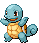

Bulbasaur N° 0001

HP 20/20

Bulbasaur é um pequeno Pokémon anfíbio, principalmente turquesa, com olhos vermelhos e um bulbo verde nas costas. É baseado em um sapo/rã, com o bulbo parecido com o bulbo de uma planta que se transforma em uma flor à medida que evolui.
Bulbasaur se destaca por ser o primeiro Pokémon da Pokédex Nacional. É uma das três opções de Pokémon inicial nos jogos originais de Game Boy, Pokémon Red & Blue (Red & Green no Japão), junto com Charmander e Squirtle .
Ivysaur N° 0002

HP 80/80
Ivysaur é um Pokémon anfíbio quadrúpede que possui pele verde-azulada com manchas mais escuras. No topo de sua cabeça há orelhas pontudas com interior preto e olhos vermelhos estreitos. Ivysaur tem um focinho curto e arredondado com uma boca larga e dois dentes pontiagudos na mandíbula superior. Cada um de seus pés tem três garras. O bulbo em suas costas floresceu em um grande botão rosa. Um tronco curto e marrom cercado por folhas verdes sustenta o botão.
O peso da planta impede que Ivysaur corra rápido e fique sobre as patas traseiras, forçando suas pernas a ficarem robustas. Quando sua flor está pronta para desabrochar, ela exala um aroma distinto e de cheiro adocicado e começa a inchar.
Venusaur N° 0003

HP 250/250
Venusaur é um Pokémon anfíbio quadrúpede e atarracado com pele azul-esverdeada acidentada. Possui olhos pequenos e circulares vermelhos e focinho curto e rombudo. Sua boca é larga, com dois dentes pontiagudos na mandíbula superior e quatro na mandíbula inferior. No topo de sua cabeça há orelhas pequenas e pontudas com interior rosa avermelhado. Possui três dedos com garras em cada pé. O botão em suas costas floresceu em uma grande flor rosa com manchas brancas. A flor é sustentada por um tronco grosso e marrom rodeado por folhas verdes. Uma Venusaur fêmea tem uma semente no centro de sua flor.
Venusaur usa sua flor para captar os raios solares e convertê-los em energia, o que faz com que a flor fique mais vibrante. A flor libera um perfume suave que atrai Pokémon e acalma as emoções. Este perfume fica mais forte depois de um dia chuvoso. No anime , Venusaur demonstrou a capacidade de manipular a natureza, liberar diversas vinhas de suas costas e liderar cerimônias de evolução para Bulbasaur e Ivysaur . Este Pokémon raramente é encontrado na natureza, mas sabe-se que habita pastagens .
Charmander N° 0004

HP 40/40
Charmander é um Pokémon reptiliano bípede com corpo principalmente laranja e olhos azuis. A parte inferior do peito para baixo e as solas dos pés são de cor creme. Possui duas pequenas presas visíveis na mandíbula superior e duas presas menores na mandíbula inferior. Um fogo arde na ponta da cauda delgada deste Pokémon e tem ardido ali desde o nascimento de Charmander. A chama pode ser usada como uma indicação da saúde e do humor de Charmander, queimando intensamente quando o Pokémon está forte, fracamente quando está exausto, oscilando quando está feliz e brilhando quando está enfurecido. Dizem que Charmander morreria se sua chama se apagasse. No entanto, se o Pokémon estiver saudável, a chama continuará a queimar mesmo que fique um pouco molhada e fumegue na chuva.
Charmander pode ser encontrado em áreas quentes e montanhosas . No entanto, é encontrado com muito mais frequência na posse de Treinadores . Conforme mostrado em Pokémon Snap e Novo Pokémon Snap , Charmander exibe comportamento de matilha, chamando outros de sua espécie se encontrar comida e observando as chamas nas caudas uns dos outros para garantir que não se apaguem.
Charmeleon N° 0005

HP 70/70
Charmeleon é um Pokémon reptiliano bípede . Possui escamas vermelho-escuras e uma parte inferior creme do peito para baixo. Possui olhos azuis e focinho comprido com ponta ligeiramente adunco. Na parte de trás da cabeça há uma única protuberância em forma de chifre. Possui braços relativamente longos com três garras afiadas. Suas pernas curtas possuem pés plantígrados com três garras e solas de cor creme. A ponta de sua cauda longa e poderosa tem uma chama acesa. A temperatura sobe para níveis insuportáveis se Charmeleon balançar a cauda.
Charmeleon tem uma natureza cruel e irá constantemente procurar oponentes. Oponentes fortes excitam este Pokémon, fazendo-o lançar chamas branco-azuladas que incendeiam os arredores. No entanto, ele relaxará depois de vencer uma batalha . É raro na natureza, mas pode ser encontrado em áreas montanhosas .
Charizard N° 0006

HP 290/290
Charizard é um Pokémon dracônico e bípede . É principalmente laranja com uma parte inferior creme do peito até a ponta da cauda. Possui pescoço longo, pequenos olhos azuis, narinas ligeiramente levantadas e duas estruturas semelhantes a chifres projetando-se na parte de trás de sua cabeça retangular. Existem duas presas visíveis na mandíbula superior quando a boca está fechada. Duas grandes asas com a parte inferior azul-esverdeada brotam de suas costas, e um apêndice em forma de chifre se projeta do topo da terceira junta de cada asa. Um único dedo alar é visível através do centro de cada membrana da asa. Os braços de Charizard são curtos e magros em comparação com sua barriga robusta, e cada membro possui três garras brancas. Possui pernas atarracadas com solas de cor creme em cada um de seus plantígradospés. A ponta de sua cauda longa e afilada queima com uma chama considerável, que pode se intensificar para uma chama azul se Charizard estiver irritado.
Charizard voa em busca de oponentes poderosos para lutar, e seu fogo ficará mais quente à medida que ele ganha experiência. Seu hálito ardente é capaz de derreter pedras e geleiras enormes, e é conhecido por causar acidentalmente incêndios florestais. Embora seu hálito ardente seja quente, ele nunca o ataca contra um oponente mais fraco que ele. Charizard normalmente habita montanhas e vales , como o Vale Charicific em Johto . O anime mostrou que apenas um Charizard fraco mostraria seu poder. Também mostrou que Charizard pode nadar debaixo d'água, com Pokémon Originsmostrando ainda que a chama na ponta da cauda ainda pode continuar queimando debaixo d'água. As asas do Charizard podem levá-lo a uma altitude de 4.600 pés (1.400 metros). Charizard vive em rebanhos com Charmander.
Squirtle N° 0007

HP 30/30
Squirtle é um pequeno Pokémon reptiliano que se assemelha a uma tartaruga azul clara. Embora normalmente ande sobre suas duas pernas curtas , foi demonstrado que ele corre de quatro em Super Smash Bros. Possui olhos grandes, arroxeados ou avermelhados e lábio superior ligeiramente adunco. Cada uma de suas mãos e pés tem três dedos pontiagudos. A ponta de sua longa cauda semelhante a um esquilo se curva para dentro. Seu corpo é envolto por uma casca dura que se forma e endurece após o nascimento. Esta concha é marrom na parte superior, amarelo claro na parte inferior e tem uma espessa crista branca entre as duas metades.
A concha do Squirtle é uma ferramenta útil. Ele pode ser retirado para dentro da concha para proteção ou para dormir. O formato arredondado e estriado ajuda a reduzir a resistência à água, permitindo que o Pokémon nade em alta velocidade. Squirtle pode borrifar água espumosa pela boca com grande precisão. Squirtle é escasso na natureza, embora possa ser encontrado próximo a pequenas lagoas e lagos . O anime mostrou que pode ser encontrado vivendo em ilhas isoladas com outros membros de sua linha evolutiva. Sharpedo é um predador natural de Squirtle. Na Geração II , Skull Bash era seu movimento característico.
Wartotle N° 0008

HP 80/80
Wartortle é um Pokémon reptiliano bípede e índigo semelhante a umtartaruga . Tem olhos castanhos, uma faixa azul escura em cada bochecha e dois dentes afiados saindo da mandíbula superior. Possui três dedos em garras e dedos pontiagudos. Em cada lado da cabeça há orelhas em forma de penas cobertas por pêlo azul claro. Uma concha marrom com uma parte inferior amarela pálida envolve seu corpo. Uma borda espessa e branca separa as metades superior e inferior da concha. Um Wartortle mais velho pode ter cicatrizes e algas crescendo em sua concha. Saindo da parte inferior da concha está uma cauda grossa e ondulada que também tem pêlo azul claro e não pode ser totalmente retraída para dentro da concha. O pelo da cauda escurecerá com o tempo. Sua cauda é um símbolo popular de longevidade e boa sorte, tornando este Pokémon popular entre os idosos
Por serem maiores que o Squirtle e terem uma concha maior, os Wartortle têm mais dificuldade para caminhar em terra e manter o equilíbrio na água. Para manter o equilíbrio enquanto nada em alta velocidade, Wartortle move suas orelhas e cauda peludas como lemes e hastes de equilíbrio. O ar pode ser armazenado em sua pele para mergulhos subaquáticos prolongados. Esconde-se na água durante a caça e emerge para surpreender suas presas. O anime mostrou que Wartortle pode ser encontrado vivendo em colônias em ilhas, mas seu habitat preferido parece ser lagoas e lagos de água doce . Na Geração II , Skull Bash era seu movimento característico .
Blastoise N° 0009

HP 210/210
Blastoise é um grande Pokémon tartaruga bípede . Seu corpo é azul e fica quase todo escondido por sua casca marrom e dura. Esta concha tem a parte inferior de cor creme e uma crista branca circundando seus braços e separando as metades superior e inferior. Dois poderosos canhões de água residem no topo de sua concha, sobre seus ombros. Esses canhões podem ser estendidos ou retirados. A cabeça de Blastoise tem orelhas triangulares pretas por dentro, pequenos olhos castanhos e mandíbula inferior de cor creme. Seus braços são grossos e possui três garras em cada mão. Seus pés possuem três garras na frente e uma nas costas. Saindo do fundo de sua concha está uma cauda atarracada.
Os poderosos canhões nas costas deste Pokémon são capazes de produzir rajadas de água que podem perfurar aço e concreto e podem ser usados para ataques de alta velocidade. Blastoise torna-se deliberadamente pesado para resistir a essas explosões poderosas e esmagar seus oponentes. Na Geração II , Skull Bash era seu movimento característico . O anime mostrou que Blastoise pode assumir o papel de líder em grandes grupos de Squirtle e Wartortle . Seu habitat preferido parece ser lagoas e lagos de água doce.